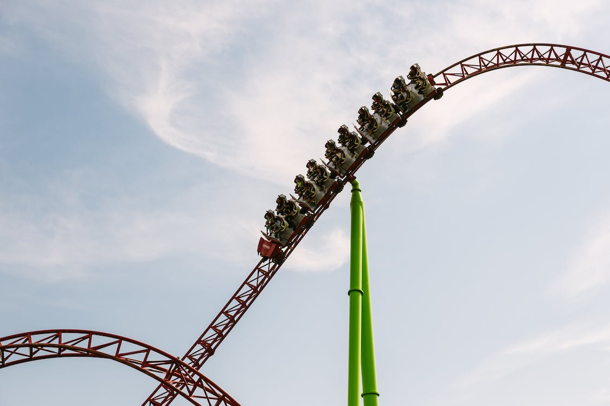
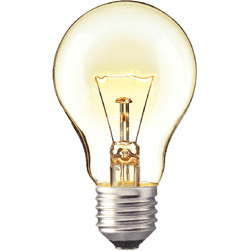
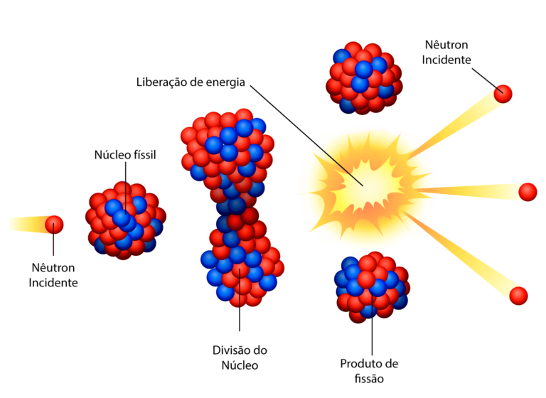
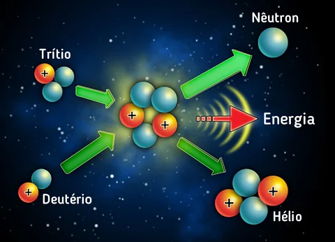

Menu
Energia
A energia é uma palavra muito utilizada no nosso vocabulário, contudo muitas pessoas não compreendem seu
verdadeiro significado, mais especificamente na física.(HELERBROCK, 2023).
“Segundo Rafael Helerbrock, A energia é expressa em muitas formas – cinética, potencial, química, entre outras, mas, essencialmente, trata-se de uma grandeza física abstrata, relacionada com o movimento e que não pode ser criada ou destruída, mas somente transformada, mediante a aplicação de uma força."
A energia é um conceito bem complexo que envolve outro conceito, o trabalho. Existem na natureza cinco formas de energia: mecânica, térmica, elétrica, química e atômica.(HELERBROCK, 2023).
Segundo Pâmella Raphaella Melo, a energia mecânica é a energia associada ao movimento e à posição de um objeto. Ela é composta por duas formas de energia: a energia cinética e a energia potencial.
A energia cinética é a energia associada ao movimento de um objeto. Quanto maior a velocidade do objeto, maior a sua energia cinética.A fórmula para calcular a energia cinética é E = (1/2)mv², onde E é a energia cinética, m é a massa do objeto e v é a sua velocidade.(Melo, 2023).
A energia potencial é a energia associada à posição de um objeto levando em consideração um ponto de referência. Um objeto colocado em uma posição mais alta em relação ao solo, por exemplo, possui mais energia potencial do que um objeto na mesma posição, mas mais próximo ao solo.(Melo, 2023).

Energia Térmica
A energia térmica é a energia associada à temperatura de um objeto. Ela está associada ao movimento aleatório das moléculas que formam um objeto e quanto maior a temperatura, maior é a agitação dessas moléculas e com isso maior é a energia térmica.(PRASS, 2023).
A temperatura ou esse “grau de agitação” pode ser transferido por condução, convecção ou radiação.(PRASS, 2023). Ex: quando temos uma xícara de chá em cima de uma mesa, o chá irá passar o calor para a mesa até que as duas estejam com a mesma temperatura.
Isso acontece porque as moléculas tendem sempre a ficar em um estado estável e constante, com isso é passado esse grau de agitação para todas as moléculas até que todas estejam na mesma frequência de agitação.(ANJOS, 2023)

Energia Elétrica
A energia elétrica é uma forma de energia que resulta da movimentação de cargas elétricas, como elétrons, através de um condutor. Essa energia é fundamental para o funcionamento de diversas tecnologias e equipamentos, desde lâmpadas e motores elétricos até celulares e computadores. (HELERBROCK, 2023).

A unidade de medida da energia elétrica é o watt-hora (Wh), que indica a quantidade de energia consumida por um dispositivo em uma hora de funcionamento. A energia elétrica é geralmente gerada em usinas de energia, que convertem outras formas de energia, como a energia mecânica ou térmica, em energia elétrica.(GOUVEIA, 2023).
A energia elétrica pode ser transmitida através de fios e cabos elétricos a longas distâncias, o que permite a distribuição da energia para diferentes locais. A energia elétrica também pode ser armazenada em baterias e capacitores, para ser utilizada posteriormente.(HELERBROCK, 2023).
Energia Quimica
A energia química é a energia armazenada nas ligações químicas entre os átomos de moléculas. Quando ocorre uma reação química, a energia química é convertida em outras formas de energia, como energia térmica, energia elétrica ou energia mecânica.(HELERBROCK, 2023).
Os combustíveis, como gasolina, carvão e gás natural, são exemplos de fontes de energia química que são frequentemente utilizados na geração de energia. (HELERBROCK, 2023).
Quando um combustível é queimado, ocorre uma reação química que libera a energia química armazenada na molécula, que é transformada em calor e energia mecânica, por exemplo, para mover um carro ou gerar eletricidade em uma usina.(HELERBROCK, 2023).

Energia Atomica
A energia atômica é a energia liberada a partir do núcleo de um átomo. Essa energia é liberada quando ocorre uma reação nuclear, que pode ser de dois tipos: fissão ou fusão.(HELERBROCK, 2023).
Fissão Nuclear
Na fissão nuclear, um núcleo atômico pesado é dividido em dois núcleos menores, liberando uma grande quantidade de energia. Essa energia pode ser usada para gerar eletricidade em usinas nucleares.(HELERBROCK, 2023).

Fusão Nuclear
A energia atômica é uma forma de energia não renovável, já que depende de fontes de urânio e outros elementos radioativos que são finitos na Terra. Além disso, o uso da energia nuclear tem implicações ambientais e de segurança significativas, como o risco de acidentes nucleares e a produção de resíduos radioativos que podem ser perigosos por centenas de milhares de anos. (HELERBROCK, 2023).

A energia atômica é uma forma de energia não renovável, já que depende de fontes de urânio e outros elementos radioativos que são finitos na Terra. Além disso, o uso da energia nuclear tem implicações ambientais e de segurança significativas, como o risco de acidentes nucleares e a produção de resíduos radioativos que podem ser perigosos por centenas de milhares de anos. (HELERBROCK, 2023).